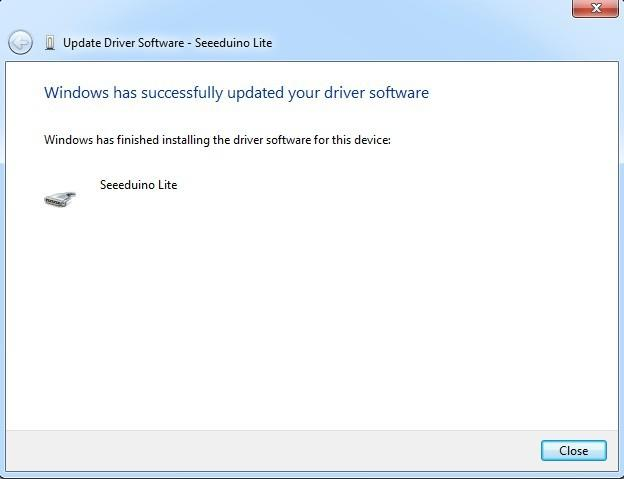

Seeeduino Lite is a microcontroller based on ATmega32U4. Just like Arduino Leonardo, it saves a secondary processor needed for USB to serial communication. And this allows Seeeduino Lite appear to computer as a USB device, like keyboard and mouse. Derived from Leonardo, we also merged custom details of Seeeduino series into Seeeduino Lite, like selectable operating voltage, onboard Grove connectors and so on. It has 20 digital I/Os (7 of which can output PWM),a micro USB connection, a power jack, an ICSP header, and a reset button. It contains everything needed to support the microcontroller; simply connect it to a computer with a USB cable or power it with a AC-to-DC adapter to get started.
Model: ARD05253P
U1: 78M05 IC, Three-terminal positive voltage regulator.
U3: LD1117 IC, a Low Drop Voltage Regulator able to provide up to 800mA of Output Current.
U5: Atmega32U4 IC, 8-bit AVR Microcontroller with 32K Bytes of ISP Flash and USB Controller.
Download the driver files from here https://github.com/Seeed-Studio/Signed_USB_Serial_Driver
Connect Seeeduino Lite to your computer via a micro-USB wire.
Wait for the new found hardware prompt.If the installer does not launch automatically, Navigate to the Windows Device Manager and find the Seeeduino Lite listing.
Right click and choose Update driver. When asked to install automatically or from a specific location, select "Browse my computer for driver software".
Choose "Search for the best driver in these locations", and check the box "incude this location in the search". Click the Browse button and navigate to drive you have downloaded. Select the drivers folder an click OK.

Replace two file in the path of Arduino. Open up Arduino-1.0.1/hardware/arduino/cores/arduino directory, replace the file:USBCore.cpp with the new USBCore.cpp.And replace file：boards.txt with the new boards.txt in the path:Arduino-1.0.1/hardware/arduino. Now, you can program and use the seeeduino lite as you use other Arduino boards.